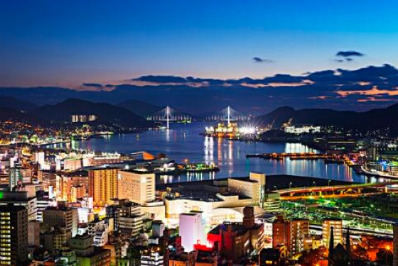

全球首个海上T广场将登陆星梦邮轮「环球级」邮轮
2980 发布时间: 2019/10/02
香港 / 广州，2019 年 11 月 15 日– 云顶邮轮集团宣布将与全球知名邮轮奢侈品零售商STARBOARD CRUISE SERVICES （下称STARBOARD）再度联手，在星梦邮轮首艘「环球级」邮轮「环球梦号」及其姊妹邮轮上率先引入全球首个海上DFS T广场，为旅客呈献由世界领先奢侈品旅游零售商DFS集团提供的一站式海上免税购物享受。
作为星梦邮轮旗下最新划时代级邮轮，排水量达 208,000 吨的两艘「环球级」邮轮将分别于 2021 年及 2022 年下水。专为亚洲豪华邮轮市场量身打造的「环球级」邮轮拥有 2350 间客房，最高载客量超过 9000 人，船员人数达 2500 人，将成为全球载客量最高的邮轮。
DFS集团及STARBOARD均为LVMH集团(Moët Hennessy Louis Vuitton)旗下精品零售商，此次三方合作将充分发挥各自优势，在「环球级」邮轮上打造全球首个海上DFS T广场，为旅客缔造超凡海上购物体验。
云顶邮轮集团总裁朱福明先生表示：「云顶邮轮很高兴继续与STARBOARD合作，在旗下专为新一代亚洲旅客而设的最新『环球级』邮轮上设立全球首个海上DFS T广场。云顶邮轮深耕亚洲邮轮行业 26 年，非常了解零售购物是亚洲旅客极为看重的旅游体验之一，相信此次与STARBOARD及DFS集团的合作，将为我们的旅客带来荟聚全球知名品牌的精彩购物之旅。」
此次云顶邮轮集团与STARBOARD及DFS集团强强联手，将在「环球级」邮轮上开设面积近 18,000 平方尺（超 1600 平方米）的购物天地，产品种类繁多，涵盖时装及配饰、美妆及香水、腕表及珠宝、食品和纪念品等丰富购物选择，为旅客打造从家中到陆地再到海上的全方位免税购物体验，并一如既往地提供T广场的优质服务、正品保障及最优价格。与此同时，本次合作还将引入众多专为「环球级」邮轮旅客设计的首创概念，包括新品牌、新产品、全新购物体验等。
分享
点赞
预订航线